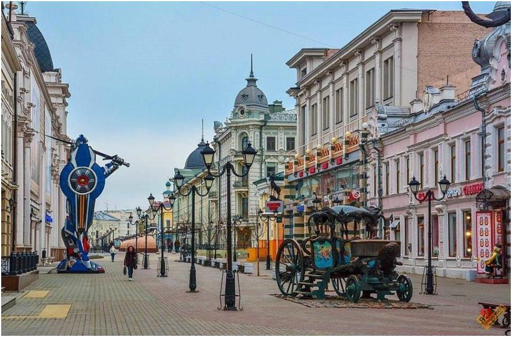
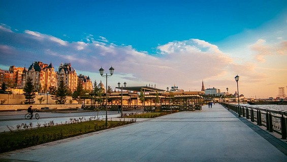
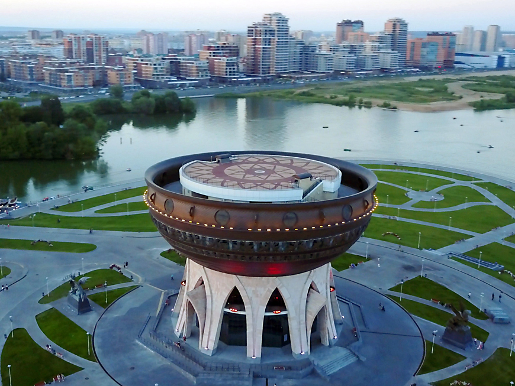
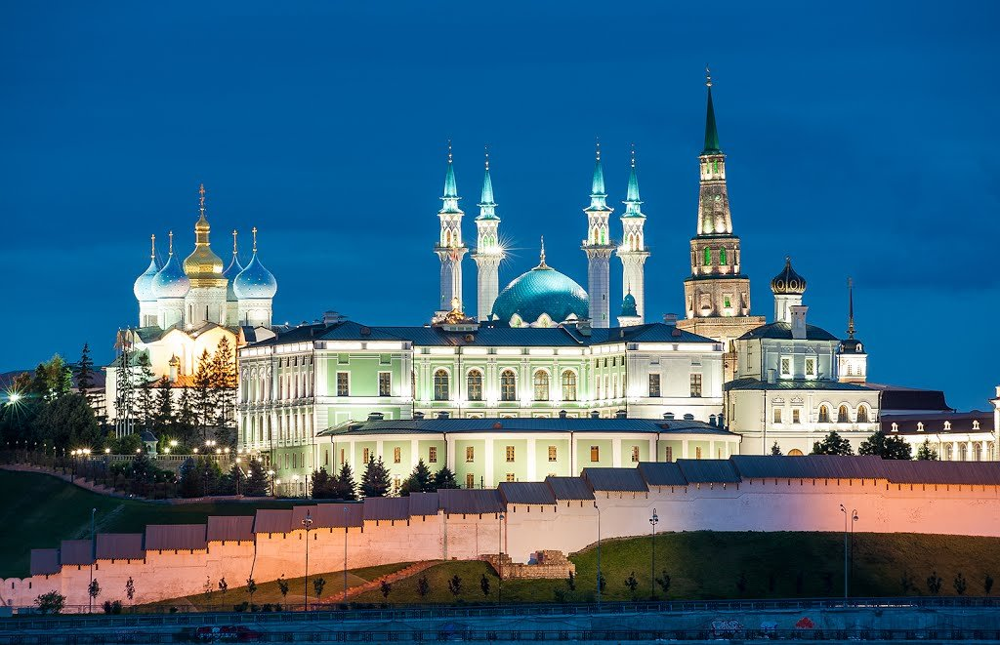

Улица Баумана берет свое начало от Казанского Кремля, а заканчивается площадью имени Тукая. Улица Баумана – это центральная пешеходная улица города Казани, которую нередко называют Казанским Арбатом.
Кремлёвская набережная - новая достопримечательность Казани. Благоустроенная прибрежная зона, пролегающая от стен Казанского Кремля до Национального культурного центра "Казань".
Казан расположен на правом высоком берегу Казанки. Благодаря большим размерам прекрасно виден из исторической части Казани. Для посетителей был открыт в 2013 году. На территории вокруг задания имеются клумбы, заасфальтированные дорожки, скамейки для отдыха. По периметру казана установлено 4 памятника: 2 - с символами города - зилантами (драконами) с детенышами и 2 - со скульптурами барсов, которые являются символами Татарстана. В казане размещаются ЗАГС, в котором имеются золотой, серебряный и восточный залы, а также смотровая площадка на высоте 32 метра. В темное время суток сооружение красиво подсвечивается. Это место проведения различных мероприятий и отдыха жителей Казани и гостей города. Для автотуристов имеется большая парковка, там же можно приобрести мороженое, воду, выпечку.
Казанский Кремль-главная достопримечательность Казани и, возможно всего Татарстана. Булгарская крепость на этом месте появилась в ХII-ХIII вв. Затем на смену ей пришла крепость татарского периода. Однако постройки периода Казанского ханства: ханский дворец, ханские усыпальницы и другие не сохранились (о башне Сююмбеке до сих пор идут споры: большинство учёных склоняется к версии о её строительстве в ХVII веке). Облик Кремля, который мы видим сегодня, формировался на протяжении веков, начиная от завоевания Казани войсками Ивана Грозного, который и принял решения о строительстве нового кремля на месте разрушенного во время штурма, и заканчивая открытием в 2005 году главной соборной мечети Татарстана Кул Шариф.
